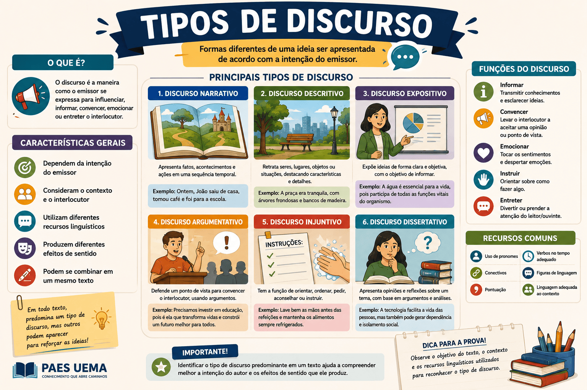

Discurso Direto, Indireto e Indireto Livre nas Obras do PAES UEMA 2027
As questões sobre Tipos de Discurso no PAES UEMA 2027 exigem que o candidato vá além da simples leitura: é preciso identificar quem está falando no texto. A literatura brasileira é rica em alternâncias de vozes, e entender como o autor dá voz aos seus personagens é essencial para a prova de Linguagens.
Nesta página, revisaremos as características que definem os discursos Direto, Indireto e Indireto Livre, analisando como os autores constroem a narrativa. Em seguida, você testará seus conhecimentos com 15 questões inéditas baseadas em fragmentos exatos das obras obrigatórias: Infância (Graciliano Ramos)[cite: 1], Crônicas de Lucy Teixeira[cite: 2] e Meu Livro de Cordel (Cora Coralina)[cite: 3].

Quais são os Tipos de Discurso?
O discurso é a forma como a fala ou o pensamento do personagem é introduzido na narrativa. As bancas de vestibular frequentemente cobram a identificação desses discursos ou a transposição de um para o outro (mudança de tempo verbal e de pronomes).
Discurso Direto
É a reprodução exata e fiel da fala do personagem. A voz do narrador pausa para que o personagem atue. É geralmente marcado por verbos de elocução (ou dicendi, como: disse, perguntou, respondeu, exclamou), seguidos de dois-pontos, aspas ou travessão.
Exemplo: O menino perguntou: — Onde está o livro?
Discurso Indireto
O narrador atua como intermediário, contando com suas próprias palavras o que o personagem disse ou pensou. Não há pontuação de diálogo, e as falas são introduzidas por verbos de elocução seguidos de conjunções integrantes (que, se). Há mudança nos tempos verbais e nos pronomes (da 1ª para a 3ª pessoa).
Exemplo: O menino perguntou onde estava o livro.
Discurso Indireto Livre
É a fusão sutil entre a voz do narrador e a voz (ou pensamento) do personagem. O narrador está narrando em 3ª pessoa, mas, de repente, insere frases que refletem exatamente a emoção, o questionamento ou a linguagem do personagem, sem usar verbos de elocução ou aspas. Exige muita atenção do leitor.
Exemplo: O menino andava pela casa. Onde estaria aquele maldito livro? Precisava encontrá-lo logo!
Em resumo: Transposição de Discursos
- Presente para Pretérito Imperfeito: "Eu quero" (Direto) → Ele disse que queria (Indireto).
- Pretérito Perfeito para Mais-que-perfeito: "Eu fui" (Direto) → Ele disse que fora/tinha ido (Indireto).
- Pronomes (1ª para 3ª): "O livro é meu" (Direto) → Ele disse que o livro era dele (Indireto).
Estratégia para o PAES UEMA
Graciliano Ramos, em Infância[cite: 1], é mestre em utilizar o Discurso Indireto Livre para mesclar suas memórias de adulto com as aflições e dúvidas da criança que foi. Fique atento a trechos narrados em 3ª pessoa que contêm exclamações, perguntas soltas e vocabulário rústico (sertanejo).
Questões sobre Tipos de Discurso para o PAES UEMA 2027
15 questões inéditas baseadas nas obras obrigatórias
Questão 1 — Identificação de Discurso (Contexto: Infância)
"Um deles perguntou como se havia de assar o bacalhau e outro respondeu: / — Faz-se um grajau de madeira."[cite: 1]
No fragmento acima[cite: 1], a fala do segundo homem reproduzida de forma exata constitui um exemplo de:
Questão 2 — Transposição de Discurso (Contexto: Infância)
"E, descobrindo um gato, perguntei de quem era o gato. D. Clara respondeu que era dela."[cite: 1]
Se a resposta de D. Clara[cite: 1] fosse transposta para o Discurso Direto, a construção correta gramaticalmente e fiel ao sentido seria:
Questão 3 — Discurso Indireto Livre (Contexto: Infância)
"Grajau? Que seria grajau? Tornei a mergulhar no sono, um sono extenso."[cite: 1]
As perguntas "Grajau? Que seria grajau?"[cite: 1] refletem o pensamento do narrador-personagem misturado à narrativa principal, sem verbo de elocução. Este recurso é conhecido como:
Questão 4 — Identificação de Discurso (Contexto: Infância)
"Disseram-me depois que a escola nos servira de pouso numa viagem."[cite: 1]
Ao relatar a fala de terceiros por meio da conjunção integrante "que"[cite: 1], o autor utiliza qual tipo de discurso?
Questão 5 — Variações do Discurso (Contexto: Infância)
"O velho Frade, influente num município vizinho, dizia que nunca matara um homem. Matava cabra ruim, muito cabra ruim."[cite: 1]
Na oração "dizia que nunca matara um homem" temos o Discurso Indireto. Já a frase "Matava cabra ruim, muito cabra ruim"[cite: 1], inserida diretamente na prosa sem verbos introdutórios, simulando a voz do velho Frade, é um exemplo de:
Questão 6 — Identificação de Discurso (Contexto: Crônicas de Lucy Teixeira)
"A menina parou e disse: 'oh, que bicho..'"[cite: 2]
O uso de aspas e do verbo "disse" para transcrever exatamente as palavras da criança[cite: 2] configura o uso de:
Questão 7 — Identificação de Discurso (Contexto: Crônicas de Lucy Teixeira)
"O senhor quer saber de uma coisa? Vá embora, ouviu? Vá embora com a sua exploração."[cite: 2]
No texto da crônica Os ovos de ouro e o sinal dos tempos[cite: 2], esse trecho representa a interrupção da voz narrativa para dar voz imediata ao personagem. Trata-se do:
Questão 8 — Discurso Indireto (Contexto: Crônicas de Lucy Teixeira)
"Mr. Malieri, porém, começou a achar que o tempo era suficiente para o aperfeiçoamento das referidas ciências e fez entender à moça o desejo de um próximo recâmbio."[cite: 2]
Na frase acima, a cronista conta ao leitor a resolução de Mr. Malieri sem reproduzir a fala exata dele[cite: 2]. Essa estrutura pertence ao:
Questão 9 — Discurso Indireto Livre (Contexto: Crônicas de Lucy Teixeira)
"Ai que ele está perdendo o controle, pensei comigo, quando o observei enfiando as mãos nos bolsos e já tirando e já de novo. Vamos, seria melhor que ficasse parado."[cite: 2]
A frase "Vamos, seria melhor que ficasse parado" mescla a narração do ambiente externo com o apelo mental íntimo da cronista em relação ao rapaz que esperava a namorada[cite: 2]. É um caso claro de:
Questão 10 — Elementos do Discurso (Contexto: Crônicas de Lucy Teixeira)
"- Sim, compreendo, disse-lhe novamente a sorrir. Dê-me o seu telegrama."[cite: 2]
O trecho "disse-lhe novamente a sorrir"[cite: 2] funciona sintaticamente como:
Questão 11 — Identificação de Discurso (Contexto: Meu Livro de Cordel)
"Perguntei: 'Será esta a Casa do Berço Azul?' / 'Não, não é aqui, nem ali, nem adiante, nem para os lados', disse ela."[cite: 3]
O recurso de transcrição exata da conversa entre a poeta e a senhora na rua[cite: 3] é o uso do:
Questão 12 — Identificação de Discurso (Contexto: Meu Livro de Cordel)
"Bati na porta da Fama, / falou que não podia atender."[cite: 3]
A poeta resume a resposta dada pela Fama sem utilizar aspas ou a fala literal da personagem[cite: 3]. Qual tipo de discurso está presente no segundo verso?
Questão 13 — Transposição de Discurso (Contexto: Meu Livro de Cordel)
"Procurei a casa da Felicidade, a vizinha da frente me informou que ela tinha se mudado / sem deixar novo endereço."[cite: 3]
Realize a conversão do trecho em Discurso Indireto para o Discurso Direto mantendo o sentido do texto de Cora Coralina[cite: 3]:
Questão 14 — Personificação e Discurso (Contexto: Meu Livro de Cordel)
"Uma lágrima me dizia: 'Não, não chora'."[cite: 3]
Além da figura de linguagem da personificação, a poeta introduz a fala da lágrima[cite: 3] através do discurso:
Questão 15 — Pontuação do Discurso (Contexto: Meu Livro de Cordel)
"Um dia o chamado heroico emocionante: - Dei Ouro para o Bem de São Paulo."[cite: 3]
O travessão utilizado antes do grito paulista na Revolução Constitucionalista no poema Estas Mãos[cite: 3] serve exclusivamente para demarcar:
Como interpretar seu resultado?
De 13 a 15 acertos — excelente preparação
Você tem um domínio avançado sobre vozes narrativas. Consegue diferenciar não apenas o que é fala ou narração, mas percebe o fino e sutil Discurso Indireto Livre, o terror de muitos candidatos.
De 10 a 12 acertos — bom desempenho
Você compreende bem as regras gramaticais e os Discursos Direto e Indireto. Provavelmente derrapou nas conversões de tempo verbal ou na identificação do Indireto Livre nas crônicas e memórias.
De 6 a 9 acertos — desempenho intermediário
Atenção extra às conjunções integrantes ("que") e aos verbos de elocução. Volte aos trechos originais no nosso material e perceba quando o narrador "toma as rédeas" da voz do personagem.
Até 5 acertos — reforce a base
A diferenciação de discurso é cobrada com frequência em vestibulares e redações! Volte à seção "Quais são os Tipos de Discurso?", entenda os três conceitos e refaça a leitura dos textos originais sublinhando quem está com a palavra.
Erros que merecem atenção na prova
- Achar que todo travessão introduz um Discurso Direto. Às vezes o travessão isola apostos ou pensamentos do narrador; verifique se há verbo de elocução ou intenção de fala real;
- Confundir a transformação verbal. Exemplo: passar do Direto (Presente) para o Indireto (Presente), quando a regra exige o recuo para o Pretérito (Imperfeito);
- Ignorar o Discurso Indireto Livre por pressa. Ele cai nas provas de Literatura para testar se você capta a profundidade psicológica do autor fundida à de seus personagens (muito comum em Graciliano Ramos).
Conclusão
Analisar os Tipos de Discurso é entrar no laboratório de criação de Lucy Teixeira, Graciliano Ramos e Cora Coralina. Observar as vozes rurais do Nordeste ou do Centro-Oeste sem intermediários, relatadas pelo viés indireto ou mergulhadas no confuso e belo discurso indireto livre, nos aproxima do cerne da narrativa para o PAES UEMA 2027.
Domine a transição gramatical das vozes, e você resolverá qualquer questão de linguagens sobre pontuação, tempos verbais ou intenção discursiva!
Conteúdos relacionados
Referências
- RAMOS, Graciliano. Infância. Record.[cite: 1]
- CORALINA, Cora. Meu Livro de Cordel. Global.[cite: 3]
- TEIXEIRA, Lucy. Crônicas de Lucy Teixeira: cenas do cotidiano de São Luís. Edições AML.[cite: 2]
- BECHARA, Evanildo. Moderna Gramática Portuguesa. Lucerna.
- Programa de conteúdos do PAES UEMA 2027.
Explore Outros Conteúdos
Continue seus estudos acessando outras seções do site Mestre Kira: